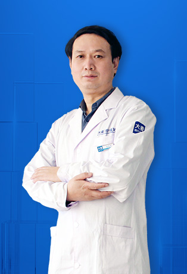
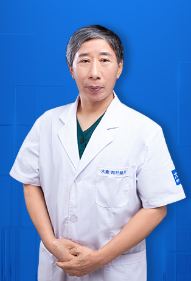
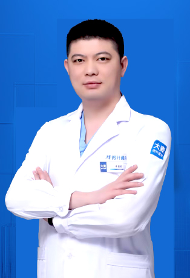

我們優秀的毛髮修復專家團隊結合數十年的專業經驗與先進微針技術。每位醫師都經過認證、接受國際培訓，致力於為全球患者提供卓越、自然的效果。

北京診所院長
副主任醫師，亞洲植髮協會會員，著名毛髮修復專家，擁有豐富的修復手術經驗。

北京診所技術總監
中華醫學會救助基金專家成員，專精藝術微針移植與大面積修復。

北京診所技術總監
中華醫學會專家，專精髮際線設計與FGF雙因子微針移植。

北京診所院長
528愛髮基金公益專家，致力於讓所有人都能獲得毛髮修復服務。

北京診所院長
中華醫學會救助基金專家，擁有豐富的綜合毛髮修復經驗。

成都診所院長
醫學會專家，將先進微針技術帶到中國西南地區。

南昌診所技術總監
哈爾濱醫院互聯網醫院醫生，528愛髮基金公益醫生。

濟南診所院長
中華醫學會救助基金專家委員會成員。
南昌診所院長
中華醫學會救助基金專家委員會成員。

青島診所院長
中華醫學會救助基金專家委員會成員。

上海診所院長
哈爾濱醫院互聯網醫院醫生，中華醫學會救助基金專家委員會成員。

上海診所技術總監
528愛髮基金公益醫師。

瀋陽診所技術總監
中華醫學會整形美容外科分會會員。

西安診所院長
中華醫學會整形美容外科分會會員。

鄭州診所院長
整形外科副主任醫師，528愛髮基金公益專家。

上海診所技術總監
哈爾濱醫院互聯網醫院醫生，外科副主任醫師。

北京診所醫師
528愛髮基金公益專家。

廣州診所醫師
528愛髮基金公益專家。

北京診所植髮醫師
哈爾濱醫院互聯網醫院醫生。

北京診所植髮醫師
哈爾濱醫院互聯網醫院醫生。

北京診所植髮醫師
哈爾濱醫院互聯網醫院醫生。
體驗與接受國際培訓的毛髮修復專家合作的不同，他們致力於追求卓越。
每位醫師均經認證，接受過毛髮修復技術和患者安全協議的廣泛專業培訓。
我們的集體專業知識跨越數百年，在全球完成了超過10萬次成功手術。
獲得國際主要毛髮修復組織認證，並在全球知名機構接受培訓。
在您的變身旅程的每一步，我們都優先考慮您的舒適、安全和滿意度。
多語言工作人員確保國際患者從諮詢到恢復的無縫溝通。
每位專家都保持著來自全球數千名滿意患者的完美五星評價。
所有手術遵循國際安全標準
資深醫師平均經驗
遍佈中國主要城市
卓越的患者滿意率
您的安心是我們的首要任務
完全無痛的植髮體驗，保證高毛囊存活率。我們先進的麻醉技術確保您在整個過程中感到舒適。
您可以信賴的認證專業植髮服務。我們擁有完整執照的醫療團隊遵循嚴格的國際安全標準。
精確的微創手術，恢復快速且無可見疤痕。我們的微針技術確保最小創傷。
見證我們患者的驚人變身


與滿意患者的珍貴瞬間

手術成功後與醫療團隊合影

與醫師慶祝出色效果

另一位滿意患者分享喜悅

出院前與專家合影

術後與陳醫師合影的開心患者

興奮展示新造型的患者

對變身效果感到欣喜的患者

以驚人效果開啟新生活的患者
來自世界各地滿意患者的分享
"在植髮醫師推薦名單中，這家醫院的尹醫師最讓我信服。副主任醫師資格加上豐富的修復手術經驗，我的二次植髮效果比第一次好太多！"
"從第一次視訊諮詢到手術結束，王醫師的耐心解釋讓我完全安心。手術團隊的精準度令人驚嘆，每一個毛囊都精心植入。術後效果超出預期，頭髮自然濃密！"
"植髮手術醫師評價中，這家醫院的醫師團隊評分最高不是沒有原因的。每位醫師都專精不同領域，我的馮醫師在髮際線設計上的美感令人驚嘆！"
"植髮專家宋醫師的FGF雙因子技術讓我的大面積禿頂問題得到完美解決。術後毛囊存活率超高，頭髮長得又密又自然。醫師團隊的專業令人折服！"
"在新加坡做植髮醫師推薦功課時，發現這裡的醫師多數是中華醫學會專家成員。關醫師的不剃髮提取技術讓我在恢復期間完全看不出手術痕跡！"
"馬來西亞到中國做植髮最看重植髮手術醫師評價，這家醫院的醫師團隊在眉毛移植和鬍鬚移植方面的藝術造詣深厚，段醫師的不剃髮提取技術一流！"
體驗我們現代舒適的設施

無菌先進設備

私密專業空間

舒適術後空間

溫暖歡迎入口

最先進的設施

在高級休息室放鬆
了解更多關於我們的醫療團隊
點擊複製聯繫方式
15810155700
+86 13730143529
hairtransplant@qq.com